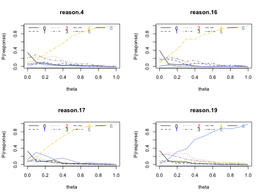

When analyzing ability tests, it is important to consider how the distractor alternatives vary as a function of the latent trait. The simple graphical solution is to plot response endorsement frequencies against the values of the latent trait found from multiple items. A good item is one in which the probability of the distractors decrease and the keyed answer increases as the latent trait increases.
irt.responses(theta,items, breaks = 11,show.missing=FALSE, show.legend=TRUE, legend.location="topleft", colors=NULL,...)
| theta | The estimated latent trait (found, for example by using |
|---|---|
| items | A matrix or data frame of the multiple choice item responses. |
| breaks | The number of levels of the theta to use to form the probability estimates. May be increased if there are enough cases. |
| show.legend | Show the legend |
| show.missing | For some SAPA data sets, there are a very large number of missing responses. In general, we do not want to show their frequency. |
| legend.location | Choose among c("bottomright", "bottom", "bottomleft", "left", "topleft", "top", "topright", "right", "center","none"). The default is "topleft". |
| colors | if NULL, then use the default colors, otherwise, specify the color choices. The basic color palette is c("black", "blue", "red", "darkgreen", "gold2", "gray50", "cornflowerblue", "mediumorchid2"). |
| ... | Other parameters for plots and points |
This function is a convenient way to analyze the quality of item alternatives in a multiple choice ability test. The typical use is to first score the test (using, e.g., score.multiple.choice according to some scoring key and to then find the score.irt based scores. Response frequencies for each alternative are then plotted against total score. An ideal item is one in which just one alternative (the correct one) has a monotonically increasing response probability.
Because of the similar pattern of results for IRT based or simple sum based item scoring, the function can be run on scores calculated either by score.irt or by score.multiple.choice. In the latter case, the number of breaks should not exceed the number of possible score alternatives.
Graphic output
Revelle, W. An introduction to psychometric theory with applications in R (in prep) Springer. Draft chapters available at http://personality-project.org/r/book/
score.multiple.choice, score.irt
data(iqitems) iq.keys <- c(4,4,4, 6,6,3,4,4, 5,2,2,4, 3,2,6,7) scores <- score.multiple.choice(iq.keys,iqitems,score=TRUE,short=FALSE) #note that for speed we can just do this on simple item counts rather # than IRT based scores. op <- par(mfrow=c(2,2)) #set this to see the output for multiple items irt.responses(scores$scores,iqitems[1:4],breaks=11)op <- par(op)